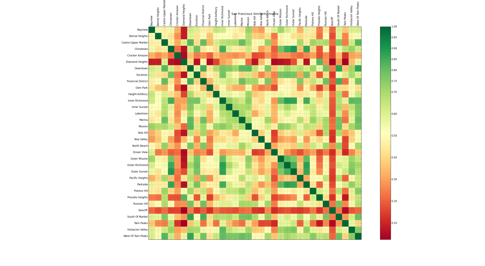
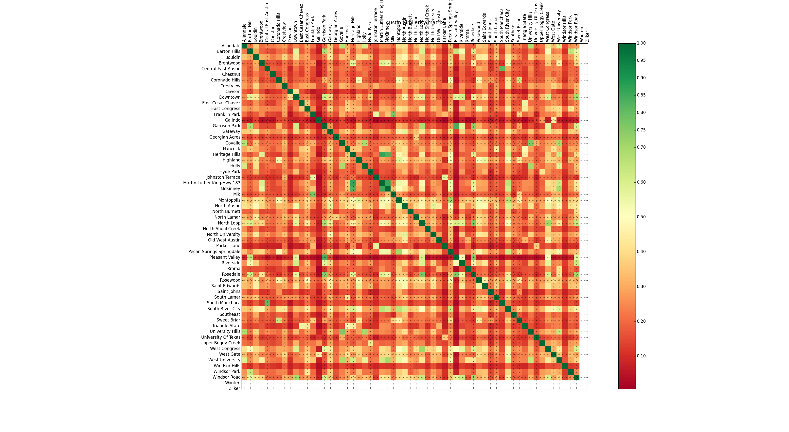

Neighborhood similarity using Foursquare data
- This is the home page of my data sciene project "Neighbood similarity using Foursquare" menu data. You can read more about this project here or here
- The code for this project can be found on my Git hub branch
You can find the similar neighboorhoods of the following cities.
1. San Franscisco (S.F.) neighborhood similarity matrix.
- Click this link to checkout the similarity data for San Francisco, CA.

2. Austin, Texas neighborhood similarity matrix.
- Click this link to checkout the similarity data for Austin, Texas.

Comments/feedback suggestion? Contact Kapil and we’ll help you sort it out.